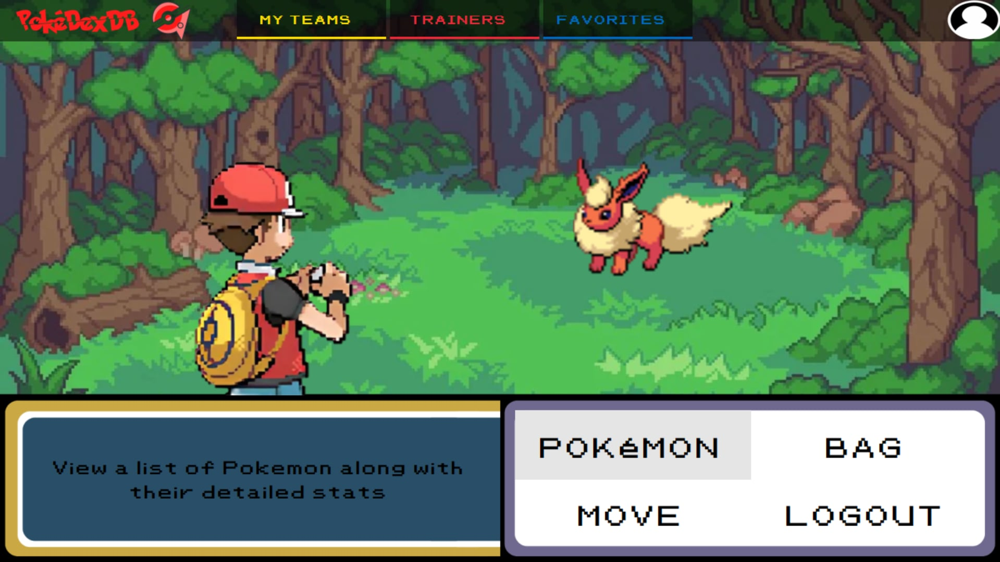
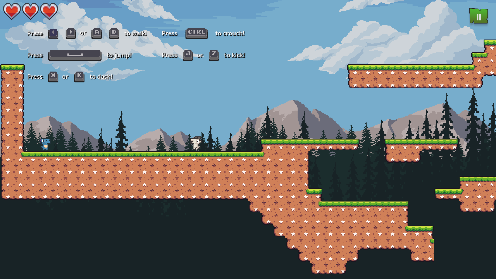
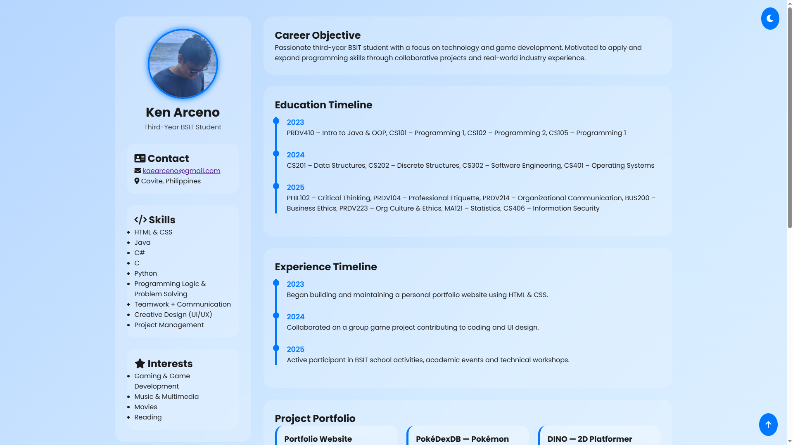
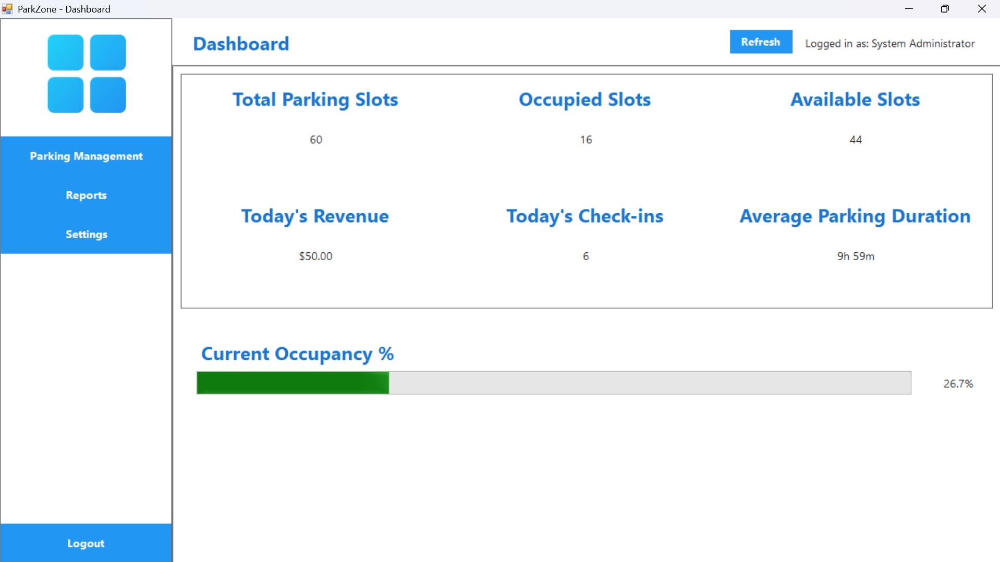
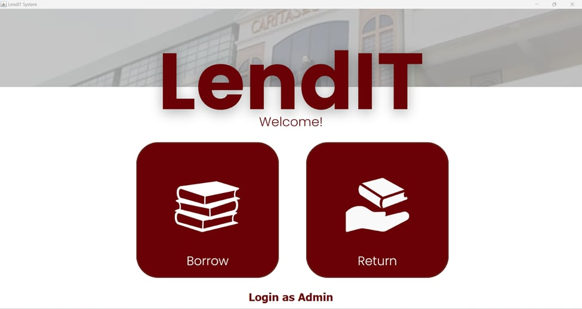
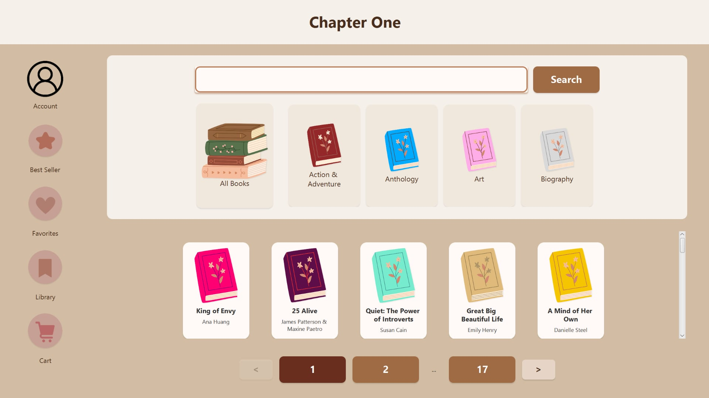

Reading
Novels, manga, manhwa — stories fuel my imagination.
A third-year college student. A reader. A maker. A story in progress.
“I don’t just read stories — I live mine.”
In a quiet corner of the world, a curious student discovered the joy of creating with code and shaping stories through design. That student is me — Ken Arceno.
I learn best by making things — small projects, class tasks, personal experiments, anything that lets me explore ideas through practice. I value clarity, thoughtful detail, and simplicity. This site is a collection of my chapters: projects, hobbies, reflections, and the little things that define my work.
Hint: click my name in the header for a tiny surprise.
Things I do for when I'm not studying.
Novels, manga, manhwa — stories fuel my imagination.
Front-end experiments and UI polish.
Lo-fi beats for focus and inspiration.
Small prototypes and level design experiments.
Selected class projects and personal experiments. Click a card to view details.

A FireRed data system that organizes game info into a clean, searchable DB for analysis of stats, movesets, and maps.

A Dino 2D platformer with progressive levels, seasonal worlds, and full ending—built from the ground up.

A clean, responsive résumé page emphasizing semantic HTML and accessibility.

Parking management system prototype focused on queue handling, slot monitoring, and quick user check-in.

Equipment circulation management system for libraries, featuring log-in/out forms, real-time resource tracking, and enhanced accountability.

Full-stack digital bookstore platform for managing eBook catalogs, facilitating secure customer purchases, and providing real-time sales analytics.
A curated list of my completed courses, certifications, and workshops to showcase my skills and learning journey.
“If you fall, fall forward.”
“Learning isn't a destination—it's a habit.”
If you'd like to collaborate, chat, or share a book recommendation, I'd love to hear from you.